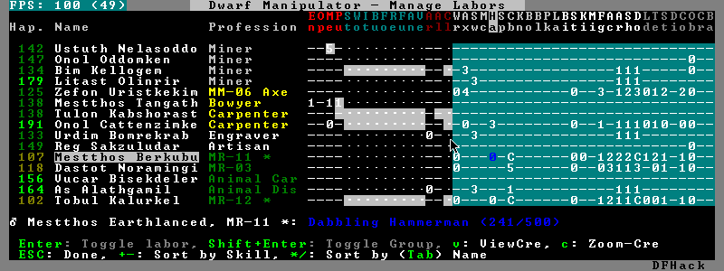

DFHack Readme
Introduction
DFHack is a Dwarf Fortress memory access library and a set of basic tools that use it. Tools come in the form of plugins or (not yet) external tools. It is an attempt to unite the various ways tools access DF memory and allow for easier development of new tools.
Contents
- Introduction
- Getting DFHack
- Compatibility
- Installation/Removal
- Using DFHack
- Something doesn't work, help!
- The init file
- Commands
- Scripts
- In-game interface tools
- Behavior Mods
Getting DFHack
The project is currently hosted on github at http://github.com/peterix/dfhack
Releases can be downloaded from here: http://dethware.org/dfhack/download
All new releases are announced in the bay12 thread: http://tinyurl.com/dfhack-ng
Compatibility
DFHack works on Windows XP, Vista, 7 or any modern Linux distribution. OSX is not supported due to lack of developers with a Mac.
Currently, version 0.34.11 is supported (and tested). If you need DFHack for older versions, look for older releases.
On Windows, you have to use the SDL version of DF.
It is possible to use the Windows DFHack under wine/OSX.
Installation/Removal
Installing DFhack involves copying files into your DF folder. Copy the files from a release archive so that:
- On Windows, SDL.dll is replaced
- On Linux, the 'dfhack' script is placed in the same folder as the 'df' script
Uninstalling is basically the same, in reverse:
- On Windows, first delete SDL.dll and rename SDLreal.dll to SDL.dll. Then remove the other DFHack files
- On Linux, Remove the DFHack files.
The stonesense plugin might require some additional libraries on Linux.
If any of the plugins or dfhack itself refuses to load, check the stderr.log file created in your DF folder.
Getting started
If DFHack is installed correctly, it will automatically pop up a console window once DF is started as usual on windows. Linux and Mac OS X require running the dfhack script from the terminal, and will use that terminal for the console.
NOTE: The dfhack-run executable is there for calling DFHack commands in an already running DF+DFHack instance from external OS scripts and programs, and is not the way how you use DFHack normally.
DFHack has a lot of features, which can be accessed by typing commands in the console, or by mapping them to keyboard shortcuts. Most of the newer and more user-friendly tools are designed to be at least partially used via the latter way.
In order to set keybindings, you have to create a text configuration file called dfhack.init; the installation comes with an example version called dfhack.init-example, which is fully functional, covers all of the recent features and can be simply renamed to dfhack.init. You are encouraged to look through it to learn which features it makes available under which key combinations.
For more information, refer to the rest of this document.
Using DFHack
DFHack basically extends what DF can do with something similar to the drop-down console found in Quake engine games. On Windows, this is a separate command line window. On linux, the terminal used to launch the dfhack script is taken over (so, make sure you start from a terminal). Basic interaction with dfhack involves entering commands into the console. For some basic instroduction, use the 'help' command. To list all possible commands, use the 'ls' command. Many commands have their own help or detailed description. You can use 'command help' or 'command ?' to show that.
The command line has some nice line editing capabilities, including history that's preserved between different runs of DF (use up/down keys to go through the history).
The second way to interact with DFHack is to bind the available commands to in-game hotkeys. The old way to do this is via the hotkey/zoom menu (normally opened with the 'h' key). Binding the commands is done by assigning a command as a hotkey name (with 'n').
A new and more flexible way is the keybinding command in the dfhack console. However, bindings created this way are not automatically remembered between runs of the game, so it becomes necessary to use the dfhack.init file to ensure that they are re-created every time it is loaded.
Interactive commands like 'liquids' cannot be used as hotkeys.
Most of the commands come from plugins. Those reside in 'hack/plugins/'.
Patched binaries
On linux and OSX, users of patched binaries may have to find the relevant section in symbols.xml, and add a new line with the checksum of their executable:
<md5-hash value='????????????????????????????????'/>
In order to find the correct value of the hash, look into stderr.log; DFHack prints an error there if it does not recognize the hash.
DFHack includes a small stand-alone utility for applying and removing binary patches from the game executable. Use it from the regular operating system console:
binpatch check "Dwarf Fortress.exe" patch.dif
Checks and prints if the patch is currently applied.
binpatch apply "Dwarf Fortress.exe" patch.dif
Applies the patch, unless it is already applied or in conflict.
binpatch remove "Dwarf Fortress.exe" patch.dif
Removes the patch, unless it is already removed.
The patches are expected to be encoded in text format used by IDA.
Live patching
As an alternative, you can use the binpatch dfhack command to apply/remove patches live in memory during a DF session.
In this case, updating symbols.xml is not necessary.
Something doesn't work, help!
First, don't panic :) Second, dfhack keeps a few log files in DF's folder - stderr.log and stdout.log. You can look at those and possibly find out what's happening. If you found a bug, you can either report it in the bay12 DFHack thread, the issues tracker on github, contact me (peterix@gmail.com) or visit the #dfhack IRC channel on freenode.
The init file
If your DF folder contains a file named dfhack.init, its contents will be run every time you start DF. This allows setting up keybindings. An example file is provided as dfhack.init-example - you can tweak it and rename to dfhack.init if you want to use this functionality.
Setting keybindings
To set keybindings, use the built-in keybinding command. Like any other command it can be used at any time from the console, but it is also meaningful in the DFHack init file.
Currently it supports any combination of Ctrl/Alt/Shift with F1-F9, or A-Z.
Possible ways to call the command:
| keybinding list <key>: | |
|---|---|
| List bindings active for the key combination. | |
| keybinding clear <key> <key>...: | |
| Remove bindings for the specified keys. | |
| keybinding add <key> "cmdline" "cmdline"...: | |
| Add bindings for the specified key. | |
| keybinding set <key> "cmdline" "cmdline"...: | |
| Clear, and then add bindings for the specified key. | |
The <key> parameter above has the following case-sensitive syntax:
[Ctrl-][Alt-][Shift-]KEY[@context]
where the KEY part can be F1-F9 or A-Z, and [] denote optional parts.
When multiple commands are bound to the same key combination, DFHack selects the first applicable one. Later 'add' commands, and earlier entries within one 'add' command have priority. Commands that are not specifically intended for use as a hotkey are always considered applicable.
The context part in the key specifier above can be used to explicitly restrict the UI state where the binding would be applicable. If called without parameters, the keybinding command among other things prints the current context string. Only bindings with a context tag that either matches the current context fully, or is a prefix ending at a '/' boundary would be considered for execution, i.e. for context foo/bar/baz, possible matches are any of @foo/bar/baz, @foo/bar, @foo or none.
Enabling plugins
Many plugins can be in a distinct enabled or disabled state. Some of them activate and deactivate automatically depending on the contents of the world raws. Others store their state in world data. However a number of them have to be enabled globally, and the init file is the right place to do it.
Most of such plugins support the built-in enable and disable commands. Calling them at any time without arguments prints a list of enabled and disabled plugins, and shows whether that can be changed through the same commands.
To enable or disable plugins that support this, use their names as arguments for the command:
enable manipulator search
Commands
DFHack command syntax consists of a command name, followed by arguments separated by whitespace. To include whitespace in an argument, quote it in double quotes. To include a double quote character, use \" inside double quotes.
If the first non-whitespace character of a line is #, the line is treated as a comment, i.e. a silent no-op command.
If the first non-whitespace character is :, the command is parsed in a special alternative mode: first, non-whitespace characters immediately following the : are used as the command name; the remaining part of the line, starting with the first non-whitespace character after the command name, is used verbatim as the first argument. The following two command lines are exactly equivalent:
- :foo a b "c d" e f
- foo "a b \"c d\" e f"
This is intended for commands like rb_eval that evaluate script language statements.
Almost all the commands support using the 'help <command-name>' built-in command to retrieve further help without having to look at this document. Alternatively, some accept a 'help'/'?' option on their command line.
Game progress
die
Instantly kills DF without saving.
forcepause
Forces DF to pause. This is useful when your FPS drops below 1 and you lose control of the game.
- Activate with 'forcepause 1'
- Deactivate with 'forcepause 0'
nopause
Disables pausing (both manual and automatic) with the exception of pause forced by 'reveal hell'. This is nice for digging under rivers.
fastdwarf
Controls speedydwarf and teledwarf. Speedydwarf makes dwarves move quickly and perform tasks quickly. Teledwarf makes dwarves move instantaneously, but do jobs at the same speed.
- 'fastdwarf 0 0' disables both
- 'fastdwarf 0 1' disables speedydwarf and enables teledwarf
- 'fastdwarf 1 0' enables speedydwarf and disables teledwarf
- 'fastdwarf 1 1' enables both
- 'fastdwarf 0' disables both
- 'fastdwarf 1' enables speedydwarf and disables teledwarf
- 'fastdwarf 2 ...' sets a native debug flag in the game memory that implements an even more aggressive version of speedydwarf.
Game interface
follow
Makes the game view follow the currently highlighted unit after you exit from current menu/cursor mode. Handy for watching dwarves running around. Deactivated by moving the view manually.
tidlers
Toggle between all possible positions where the idlers count can be placed.
twaterlvl
Toggle between displaying/not displaying liquid depth as numbers.
copystock
Copies the parameters of the currently highlighted stockpile to the custom stockpile settings and switches to custom stockpile placement mode, effectively allowing you to copy/paste stockpiles easily.
rename
Allows renaming various things.
Options:
rename squad <index> "name": Rename squad by index to 'name'. rename hotkey <index> "name": Rename hotkey by index. This allows assigning longer commands to the DF hotkeys. rename unit "nickname": Rename a unit/creature highlighted in the DF user interface. rename unit-profession "custom profession": Change proffession name of the highlighted unit/creature. rename building "name": Set a custom name for the selected building. The building must be one of stockpile, workshop, furnace, trap, siege engine or an activity zone.
Adventure mode
adv-bodyswap
This allows taking control over your followers and other creatures in adventure mode. For example, you can make them pick up new arms and armor and equip them properly.
Usage:
- When viewing unit details, body-swaps into that unit.
- In the main adventure mode screen, reverts transient swap.
advtools
A package of different adventure mode tools (currently just one)
Usage:
list-equipped [all]: List armor and weapons equipped by your companions. If all is specified, also lists non-metal clothing. metal-detector [all-types] [non-trader]: Reveal metal armor and weapons in shops. The options disable the checks on item type and being in shop.
Map modification
3dveins
Removes all existing veins from the map and generates new ones using 3D Perlin noise, in order to produce a layout that smoothly flows between Z levels. The vein distribution is based on the world seed, so running the command for the second time should produce no change. It is best to run it just once immediately after embark.
This command is intended as only a cosmetic change, so it takes care to exactly preserve the mineral counts reported by prospect all. The amounts of different layer stone may slightly change in some cases if vein mass shifts between Z layers.
This command is very unlikely to work on maps generated before version 0.34.08.
Note that there is no undo option other than restoring from backup.
changelayer
Changes material of the geology layer under cursor to the specified inorganic RAW material. Can have impact on all surrounding regions, not only your embark! By default changing stone to soil and vice versa is not allowed. By default changes only the layer at the cursor position. Note that one layer can stretch across lots of z levels. By default changes only the geology which is linked to the biome under the cursor. That geology might be linked to other biomes as well, though. Mineral veins and gem clusters will stay on the map. Use 'changevein' for them.
tl;dr: You will end up with changing quite big areas in one go, especially if you use it in lower z levels. Use with care.
Options:
all_biomes: Change selected layer for all biomes on your map. Result may be undesirable since the same layer can AND WILL be on different z-levels for different biomes. Use the tool 'probe' to get an idea how layers and biomes are distributed on your map. all_layers: Change all layers on your map (only for the selected biome unless 'all_biomes' is added). Candy mountain, anyone? Will make your map quite boring, but tidy. force: Allow changing stone to soil and vice versa. !!THIS CAN HAVE WEIRD EFFECTS, USE WITH CARE!! Note that soil will not be magically replaced with stone. You will, however, get a stone floor after digging so it will allow the floor to be engraved. Note that stone will not be magically replaced with soil. You will, however, get a soil floor after digging so it could be helpful for creating farm plots on maps with no soil. verbose: Give some details about what is being changed. trouble: Give some advice about known problems.
Examples:
- changelayer GRANITE
- Convert layer at cursor position into granite.
- changelayer SILTY_CLAY force
- Convert layer at cursor position into clay even if it's stone.
- changelayer MARBLE all_biomes all_layers
- Convert all layers of all biomes which are not soil into marble.
Note
- If you use changelayer and nothing happens, try to pause/unpause the game for a while and try to move the cursor to another tile. Then try again. If that doesn't help try temporarily changing some other layer, undo your changes and try again for the layer you want to change. Saving and reloading your map might also help.
- You should be fine if you only change single layers without the use of 'force'. Still it's advisable to save your game before messing with the map.
- When you force changelayer to convert soil to stone you might experience weird stuff (flashing tiles, tiles changed all over place etc). Try reverting the changes manually or even better use an older savegame. You did save your game, right?
changevein
Changes material of the vein under cursor to the specified inorganic RAW material. Only affects tiles within the current 16x16 block - for veins and large clusters, you will need to use this command multiple times.
Example:
- changevein NATIVE_PLATINUM
- Convert vein at cursor position into platinum ore.
changeitem
Allows changing item material and base quality. By default the item currently selected in the UI will be changed (you can select items in the 'k' list or inside containers/inventory). By default change is only allowed if materials is of the same subtype (for example wood<->wood, stone<->stone etc). But since some transformations work pretty well and may be desired you can override this with 'force'. Note that some attributes will not be touched, possibly resulting in weirdness. To get an idea how the RAW id should look like, check some items with 'info'. Using 'force' might create items which are not touched by crafters/haulers.
Options:
info: Don't change anything, print some info instead. here: Change all items at the cursor position. Requires in-game cursor. material, m: Change material. Must be followed by valid material RAW id. quality, q: Change base quality. Must be followed by number (0-5). force: Ignore subtypes, force change to new material.
Examples:
- changeitem m INORGANIC:GRANITE here
- Change material of all items under the cursor to granite.
- changeitem q 5
- Change currently selected item to masterpiece quality.
colonies
Allows listing all the vermin colonies on the map and optionally turning them into honey bee colonies.
Options:
bees: turn colonies into honey bee colonies
createitem
Allows creating new items of arbitrary types and made of arbitrary materials. Any items created are spawned at the feet of the selected unit.
Specify the item and material information as you would indicate them in custom reaction raws, with the following differences: * Separate the item and material with a space rather than a colon * If the item has no subtype, omit the :NONE * If the item is REMAINS, FISH, FISH_RAW, VERMIN, PET, or EGG, specify a CREATURE:CASTE pair instead of a material token.
Corpses, body parts, and prepared meals cannot be created using this tool.
- Examples:
- createitem GLOVES:ITEM_GLOVES_GAUNTLETS INORGANIC:STEEL 2
- Create 2 pairs of steel gauntlets.
- createitem WOOD PLANT_MAT:TOWER_CAP:WOOD
- Create tower-cap logs.
- createitem FISH FISH_SHAD:MALE 5
- Create a stack of 5 cleaned shad, ready to eat.
deramp (by zilpin)
Removes all ramps designated for removal from the map. This is useful for replicating the old channel digging designation. It also removes any and all 'down ramps' that can remain after a cave-in (you don't have to designate anything for that to happen).
feature
Enables management of map features.
- Discovering a magma feature (magma pool, volcano, magma sea, or curious underground structure) permits magma workshops and furnaces to be built.
- Discovering a cavern layer causes plants (trees, shrubs, and grass) from that cavern to grow within your fortress.
Options:
list: Lists all map features in your current embark by index. show X: Marks the selected map feature as discovered. hide X: Marks the selected map feature as undiscovered.
infiniteSky
Automatically allocates new z-levels of sky at the top of the map as you build up, or on request allocates many levels all at once.
- Examples:
- infiniteSky n Raise the sky by n z-levels. infiniteSky enable/disable Enables/disables monitoring of constructions. If you build anything in the second to highest z-level, it will allocate one more sky level. This is so you can continue to build stairs upward.
liquids
Allows adding magma, water and obsidian to the game. It replaces the normal dfhack command line and can't be used from a hotkey. Settings will be remembered as long as dfhack runs. Intended for use in combination with the command liquids-here (which can be bound to a hotkey).
For more information, refer to the command's internal help.
Note
Spawning and deleting liquids can F up pathing data and temperatures (creating heat traps). You've been warned.
liquids-here
Run the liquid spawner with the current/last settings made in liquids (if no settings in liquids were made it paints a point of 7/7 magma by default).
Intended to be used as keybinding. Requires an active in-game cursor.
tiletypes
Can be used for painting map tiles and is an interactive command, much like liquids.
The tool works with two set of options and a brush. The brush determines which tiles will be processed. First set of options is the filter, which can exclude some of the tiles from the brush by looking at the tile properties. The second set of options is the paint - this determines how the selected tiles are changed.
Both paint and filter can have many different properties including things like general shape (WALL, FLOOR, etc.), general material (SOIL, STONE, MINERAL, etc.), state of 'designated', 'hidden' and 'light' flags.
The properties of filter and paint can be partially defined. This means that you can for example do something like this:
filter material STONE filter shape FORTIFICATION paint shape FLOOR
This will turn all stone fortifications into floors, preserving the material.
Or this:
filter shape FLOOR filter material MINERAL paint shape WALL
Turning mineral vein floors back into walls.
The tool also allows tweaking some tile flags:
Or this:
paint hidden 1 paint hidden 0
This will hide previously revealed tiles (or show hidden with the 0 option).
More recently, the tool supports changing the base material of the tile to an arbitrary stone from the raws, by creating new veins as required. Note that this mode paints under ice and constructions, instead of overwriting them. To enable, use:
paint stone MICROCLINE
This mode is incompatible with the regular material setting, so changing it cancels the specific stone selection:
paint material ANY
Since different vein types have different drop rates, it is possible to choose which one to use in painting:
paint veintype CLUSTER_SMALL
When the chosen type is CLUSTER (the default), the tool may automatically choose to use layer stone or lava stone instead of veins if its material matches the desired one.
Any paint or filter option (or the entire paint or filter) can be disabled entirely by using the ANY keyword:
paint hidden ANY paint shape ANY filter material any filter shape any filter any
- You can use several different brushes for painting tiles:
- Point. (point)
- Rectangular range. (range)
- A column ranging from current cursor to the first solid tile above. (column)
- DF map block - 16x16 tiles, in a regular grid. (block)
Example:
range 10 10 1
This will change the brush to a rectangle spanning 10x10 tiles on one z-level. The range starts at the position of the cursor and goes to the east, south and up.
For more details, see the 'help' command while using this.
tiletypes-commands
Runs tiletypes commands, separated by ;. This makes it possible to change tiletypes modes from a hotkey.
tiletypes-here
Apply the current tiletypes options at the in-game cursor position, including the brush. Can be used from a hotkey.
tiletypes-here-point
Apply the current tiletypes options at the in-game cursor position to a single tile. Can be used from a hotkey.
tubefill
Fills all the adamantine veins again. Veins that were empty will be filled in too, but might still trigger a demon invasion (this is a known bug).
extirpate
A tool for getting rid of trees and shrubs. By default, it only kills a tree/shrub under the cursor. The plants are turned into ashes instantly.
Options:
shrubs: affect all shrubs on the map trees: affect all trees on the map all: affect every plant!
grow
Makes all saplings present on the map grow into trees (almost) instantly.
immolate
Very similar to extirpate, but additionally sets the plants on fire. The fires can and will spread ;)
regrass
Regrows grass. Not much to it ;)
weather
Prints the current weather map by default.
Also lets you change the current weather to 'clear sky', 'rainy' or 'snowing'.
Options:
snow: make it snow everywhere. rain: make it rain. clear: clear the sky.
Map inspection
cursecheck
Checks a single map tile or the whole map/world for cursed creatures (ghosts, vampires, necromancers, werebeasts, zombies).
With an active in-game cursor only the selected tile will be observed. Without a cursor the whole map will be checked.
By default cursed creatures will be only counted in case you just want to find out if you have any of them running around in your fort. Dead and passive creatures (ghosts who were put to rest, killed vampires, ...) are ignored. Undead skeletons, corpses, bodyparts and the like are all thrown into the curse category "zombie". Anonymous zombies and resurrected body parts will show as "unnamed creature".
Options:
detail: Print full name, date of birth, date of curse and some status info (some vampires might use fake identities in-game, though). nick: Set the type of curse as nickname (does not always show up in-game, some vamps don't like nicknames). all: Include dead and passive cursed creatures (can result in a quite long list after having FUN with necromancers). verbose: Print all curse tags (if you really want to know it all).
Examples:
- cursecheck detail all
- Give detailed info about all cursed creatures including deceased ones (no in-game cursor).
- cursecheck nick
- Give a nickname all living/active cursed creatures on the map(no in-game cursor).
Note
- If you do a full search (with the option "all") former ghosts will show up with the cursetype "unknown" because their ghostly flag is not set anymore. But if you happen to find a living/active creature with cursetype "unknown" please report that in the dfhack thread on the modding forum or per irc. This is likely to happen with mods which introduce new types of curses, for example.
flows
A tool for checking how many tiles contain flowing liquids. If you suspect that your magma sea leaks into HFS, you can use this tool to be sure without revealing the map.
probe
Can be used to determine tile properties like temperature.
prospect
Prints a big list of all the present minerals and plants. By default, only the visible part of the map is scanned.
Options:
all: Scan the whole map, as if it was revealed. value: Show material value in the output. Most useful for gems. hell: Show the Z range of HFS tubes. Implies 'all'.
Pre-embark estimate
If prospect is called during the embark selection screen, it displays an estimate of layer stone availability.
Note
The results of pre-embark prospect are an estimate, and can at best be expected to be somewhere within +/- 30% of the true amount; sometimes it does a lot worse. Especially, it is not clear how to precisely compute how many soil layers there will be in a given embark tile, so it can report a whole extra layer, or omit one that is actually present.
Options:
all: Also estimate vein mineral amounts.
reveal
This reveals the map. By default, HFS will remain hidden so that the demons don't spawn. You can use 'reveal hell' to reveal everything. With hell revealed, you won't be able to unpause until you hide the map again. If you really want to unpause with hell revealed, use 'reveal demons'.
Reveal also works in adventure mode, but any of its effects are negated once you move. When you use it this way, you don't need to run 'unreveal'.
unreveal
Reverts the effects of 'reveal'.
revtoggle
Switches between 'reveal' and 'unreveal'.
revflood
This command will hide the whole map and then reveal all the tiles that have a path to the in-game cursor.
revforget
When you use reveal, it saves information about what was/wasn't visible before revealing everything. Unreveal uses this information to hide things again. This command throws away the information. For example, use in cases where you abandoned with the fort revealed and no longer want the data.
showmood
Shows all items needed for the currently active strange mood.
Mod Interaction
This section describes plugins that interact with information in the raw files to add new features that cannot be achieved by only changing raw files.
autoSyndrome
This plugin replaces "boiling rock" syndromes. Without this plugin, it is possible to add a syndrome to a unit by making the unit perform a custom reaction. First, add the syndrome to a rock which boils at room temperature. Make sure that the syndrome is spread by inhaling. Then, add a custom reaction which creates that rock. When the reaction is performed, the rock will be created, then boil. Hopefully, the dwarf will inhale the gas and become afflicted with the syndrome. This has disadvantages.
- The creating unit might not inhale the gas. This makes it difficult to balance gameplay, as it is hard to measure this probability.
- A different unit might inhale the gas. Pets or children might inhale the gas, which may be undesired.
To fix this problem, you can use autoSyndrome. The plugin monitors when custom reactions are completed within dwarf mode. If certain conditions are met, then the syndrome is immediately applied. The conditions are described below in priority order. If multiple products are created by the reaction, each one is considered independently in order. If a rock has multiple syndromes, each one is considered independently. If the conditions are all met, then the appropriate target will be instantly afficted with the appropriate syndrome, and the syndrome will behave just like any other.
- The recently completed reaction must be a custom reaction, not a built-in one.
- The product must be an inorganic boulder. Its boiling temperature is ignored.
- The syndrome must have [SYN_CLASS:\AUTO_SYNDROME].
- If the syndrome has [SYN_CLASS:\ALLOW_MULTIPLE_TARGETS] then an unbounded number of units can be targetted by the syndrome. If absent, at most one will be affected, and the worker will be considered first.
- If the syndrome has [SYN_CLASS:\ALLOW_NONWORKER_TARGETS] then units that are in the building might be targetted. If absent, only the worker will be targetted. Even if present, the worker will be considered first.
- If the syndrome has [SYN_CLASS:\PRESERVE_ROCK] then the stone or stones created will not be destroyed. If absent, they will be. Leaving this out ensures that gasses from boiling rocks will not sidestep the plugin, affecting nearby units using existing gameplay mechanics (because said gasses will never get a chance to be created).
- If there are no SYN_IMMUNE_CREATURE, SYN_AFFECTED_CREATURE, SYN_IMMUNE_CLASS, or SYN_AFFECTED_CLASS then any creature can be targetted, if it meets the above restrictions.
- If the target creature is specified as SYN_IMMUNE_CREATURE in the syndrome tags, then it will not be affected.
- If it is specified as SYN_AFFECTED_CREATURE then it will be affected.
- If it has SYN_IMMUNE_CLASS it will not be affected.
- It it has SYN_AFFECTED_CLASS it will be affected.
Note that tags like [SYN_INHALED] are ignored.
The plugin will work for transformations, but doesn't seem to properly apply CE_BLEEDING, for example. Further testing is required.
If the reaction is run twice, by default, a second instance of the syndrome is added. This behavior can be customized. With [SYN_CLASS:\RESET_POLICY DoNothing], units already afflicted with the syndrome will not be considered for syndrome application. With [SYN_CLASS:\RESET_POLICY ResetDuration] the existing syndrome timer is reset. With [SYN_CLASS:\RESET_POLICY AddDuration] the duration of the longest effect in the syndrome is added to the remaining duration of the existing syndrome. The tag [SYN_CLASS:\RESET_POLICY NewInstance] re-establishes the default behavior. If more than one such tag is present, the last one takes priority.
It is also possible to directly trigger dfhack plugins and scripts using autoSyndrome. If a syndrome has [SYN_CLASS:\COMMAND] then all following SYN_CLASS tags will be used to create a console command. The command will behave exactly as if the user had typed it in to the dfhack console. For example
[SYN_CLASS:\COMMAND] [SYN_CLASS:prospect] [SYN_CLASS:all]
would run the command "prospect all" whenever the given rock is created. The \AUTO_SYNDROME tag IS required for commands to execute. Note that since all SYN_CLASS tags after the \COMMAND tag are interpreted as part of the command, tags like \WORKER_ONLY must be placed before \COMMAND, or not at all in order to work.
There are also certain "special" arguments that can be passed.
- \LOCATION: pass the x, y, and z coordinates of the work tile of the building which completed the job as separate arguments.
- \WORKER_ID: pass the unit id of the unit that finished the job as an argument.
- \REACTION_INDEX: pass the id of the completed reaction as an argument.
A note on spaces: when a plugin command executes in dfhack, it always has a list of arguments. Arguments are strings which tell the plugin what the user wants it to do. When the user types in a command, arguments will be separated by whitespace. However, if autoSyndrome is given a tag like [SYN_CLASS:123 abcde] after a [SYN_CLASS:\COMMAND] tag, this will still be treated as ONE argument. This may or may not cause problems, depending on the command in question. To be safe, never include spaces in as an argument to a command.
For example, suppose a reaction creates a rock which has a syndrome with the SYN_CLASS tags \AUTO_SYNDROME, \COMMAND, printArgs, id_comes_next, \WORKER_ID, location_comes_next, \LOCATION in that order. Suppose the reaction is done at (35,96,112) by unit number 15. This would be equivalent to typing printArgs id_comes_next 15 location_comes_next 35 96 112 into the DFHack console and pressing enter.
Other syndrome classes that occur before \COMMAND (or in absence of any \COMMAND synclass) are ignored.
It is not currently possible to execute more than one command per syndrome. Instead, use multiple syndromes to achieve the same effect. Note that it is possible to have multiple syndromes on the same stone.
Again, note that plugins AND scripts can be executed this way, and arguments will be passed according to the same rules.
outsideOnly
This plugin makes it so that buildings whose names begin with OUTSIDE_ONLY cannot be built inside. If the player attempts to do so, the building will automatically be deconstructed.
syndromeTrigger
This plugin allows DFHack commands to be executed whenever a unit becomes afflicted with a syndrome. This can happen due to a boiling rock, an interaction, autoSyndrome, etc. Regardless of the cause, if the appropriate SYN_CLASS tags are present, the command will execute.
The syntax is very similar to autoSyndrome. If the syndrome has the \COMMAND tag, every subsequent SYN_CLASS tag will be used to create a console command. The following tags are "special":
- \LOCATION: this will be replaced by three arguments, one for each coordinate of the location of the unit.
- \UNIT_ID: this will be replaced by the identifier of the unit afllicted with the syndrome.
- \SYNDROME_ID: this will be replaced by the identifier of the syndrome in question.
If there is a [SYN_CLASS:\AUTO_SYNDROME] tag, then the command, if any, will NOT be executed by syndromeTrigger, because it should already have been executed by autoSyndrome.
True Transformation
The syndromeTrigger plugin also allows true, permanent transformations. In vanilla DF, if syndrome A transforms dwarves into goblins permanently, and syndrome B transforms goblins into dragons permanently, then syndrome B would NOT properly transform goblins that had been transformed from dwarves. True transformations can be achieved with this plugin.
True transformations work differently. First, the unit transforms into a temporary, distinct, intermediate form. While transformed, this plugin overwrites their "original" unit type with the desired type. When the transformation wears off, they will turn "back" into the new unit type. Once truly transformed, units will function as if they had always been the new unit type. Equipment may be dropped on transformation, but relationships and experience should be maintained.
Suppose you want to transform dwarves into goblins. First, make a syndrome that turns dwarves into ducks for 1 tick (start:0:end:1). It should work with END:1, but if it doesn't, try END:5. You MUST use START:0. Setting the end time very high will make the intermediate form take longer, and should have no other influence on the behavior of this plugin. The intermediate form must NOT be the same as the original form, and it must NOT be the same as the final form, or the game will crash. Add the following tags:
[SYN_CLASS:\PERMANENT] [SYN_CLASS:GOBLIN] [SYN_CLASS:MALE]
Note that you must use the "official" (usually allcaps) name of the target creature/caste, not necessarily the name used in game. For example, you would use BIRD_DUCK, MALE, instead of drake.
It is perfectly fine to use syndromeTrigger along with autoSyndrome. This means that you can, for example, trigger a true transformation using a reaction. It is also possible to trigger a true transformation using an interaction, or another plugin that adds syndromes, so long as that other plugin does not interfere with the tags required for this one to work properly.
Designations
burrow
Miscellaneous burrow control. Allows manipulating burrows and automated burrow expansion while digging.
Options:
- enable feature ...
- Enable features of the plugin.
- disable feature ...
- Disable features of the plugin.
- clear-unit burrow burrow ...
- Remove all units from the burrows.
- clear-tiles burrow burrow ...
- Remove all tiles from the burrows.
- set-units target-burrow src-burrow ...
- Clear target, and adds units from source burrows.
- add-units target-burrow src-burrow ...
- Add units from the source burrows to the target.
- remove-units target-burrow src-burrow ...
- Remove units in source burrows from the target.
- set-tiles target-burrow src-burrow ...
- Clear target and adds tiles from the source burrows.
- add-tiles target-burrow src-burrow ...
- Add tiles from the source burrows to the target.
- remove-tiles target-burrow src-burrow ...
Remove tiles in source burrows from the target.
For these three options, in place of a source burrow it is possible to use one of the following keywords: ABOVE_GROUND, SUBTERRANEAN, INSIDE, OUTSIDE, LIGHT, DARK, HIDDEN, REVEALED
Features:
auto-grow: When a wall inside a burrow with a name ending in '+' is dug out, the burrow is extended to newly-revealed adjacent walls. This final '+' may be omitted in burrow name args of commands above. Digging 1-wide corridors with the miner inside the burrow is SLOW.
digv
Designates a whole vein for digging. Requires an active in-game cursor placed over a vein tile. With the 'x' option, it will traverse z-levels (putting stairs between the same-material tiles).
digvx
A permanent alias for 'digv x'.
digl
Designates layer stone for digging. Requires an active in-game cursor placed over a layer stone tile. With the 'x' option, it will traverse z-levels (putting stairs between the same-material tiles). With the 'undo' option it will remove the dig designation instead (if you realize that digging out a 50 z-level deep layer was not such a good idea after all).
diglx
A permanent alias for 'digl x'.
digexp
This command can be used for exploratory mining.
See: http://df.magmawiki.com/index.php/DF2010:Exploratory_mining
There are two variables that can be set: pattern and filter.
Patterns:
diag5: diagonals separated by 5 tiles diag5r: diag5 rotated 90 degrees ladder: A 'ladder' pattern ladderr: ladder rotated 90 degrees clear: Just remove all dig designations cross: A cross, exactly in the middle of the map.
Filters:
all: designate whole z-level hidden: designate only hidden tiles of z-level (default) designated: Take current designation and apply pattern to it.
After you have a pattern set, you can use 'expdig' to apply it again.
Examples:
- designate the diagonal 5 patter over all hidden tiles:
- expdig diag5 hidden
- apply last used pattern and filter:
- expdig
- Take current designations and replace them with the ladder pattern:
- expdig ladder designated
digcircle
A command for easy designation of filled and hollow circles. It has several types of options.
Shape:
hollow: Set the circle to hollow (default) filled: Set the circle to filled #: Diameter in tiles (default = 0, does nothing)
Action:
set: Set designation (default) unset: Unset current designation invert: Invert designations already present
Designation types:
dig: Normal digging designation (default) ramp: Ramp digging ustair: Staircase up dstair: Staircase down xstair: Staircase up/down chan: Dig channel
After you have set the options, the command called with no options repeats with the last selected parameters.
Examples:
- 'digcircle filled 3' = Dig a filled circle with radius = 3.
- 'digcircle' = Do it again.
digtype
For every tile on the map of the same vein type as the selected tile, this command designates it to have the same designation as the selected tile. If the selected tile has no designation, they will be dig designated. If an argument is given, the designation of the selected tile is ignored, and all appropriate tiles are set to the specified designation.
Options:
dig: channel: ramp: updown: up/down stairs up: up stairs down: down stairs clear: clear designation
digFlood
Automatically digs out specified veins as they are discovered. It runs once every time a dwarf finishes a dig job. It will only dig out appropriate tiles that are adjacent to the finished dig job. To add a vein type, use digFlood 1 [type]. This will also enable the plugin. To remove a vein type, use digFlood 0 [type] 1 to disable, then remove, then re-enable.
digFlood 0 disable
digFlood 1 enable
digFlood 0 MICROCLINE COAL_BITUMINOUS 1 disable plugin, remove microcline and bituminous coal from monitoring, then re-enable the plugin
digFlood CLEAR remove all inorganics from monitoring
digFlood digAll1 ignore the monitor list and dig any vein
digFlood digAll0 disable digAll mode
See help digFlood for details.
filltraffic
Set traffic designations using flood-fill starting at the cursor.
Traffic Type Codes:
H: High Traffic N: Normal Traffic L: Low Traffic R: Restricted Traffic
Other Options:
X: Fill accross z-levels. B: Include buildings and stockpiles. P: Include empty space.
Example:
'filltraffic H' - When used in a room with doors, it will set traffic to HIGH in just that room.
alltraffic
Set traffic designations for every single tile of the map (useful for resetting traffic designations).
Traffic Type Codes:
H: High Traffic N: Normal Traffic L: Low Traffic R: Restricted Traffic
Example:
'alltraffic N' - Set traffic to 'normal' for all tiles.
restrictliquid
Restrict traffic on all visible tiles with liquid.
restrictice
Restrict traffic on all tiles on top of visible ice.
getplants
This tool allows plant gathering and tree cutting by RAW ID. Specify the types of trees to cut down and/or shrubs to gather by their plant names, separated by spaces.
Options:
-t: Select trees only (exclude shrubs) -s: Select shrubs only (exclude trees) -c: Clear designations instead of setting them -x: Apply selected action to all plants except those specified (invert selection)
Specifying both -t and -s will have no effect. If no plant IDs are specified, all valid plant IDs will be listed.
Cleanup and garbage disposal
clean
Cleans all the splatter that get scattered all over the map, items and creatures. In an old fortress, this can significantly reduce FPS lag. It can also spoil your !!FUN!!, so think before you use it.
Options:
map: Clean the map tiles. By default, it leaves mud and snow alone. units: Clean the creatures. Will also clean hostiles. items: Clean all the items. Even a poisoned blade.
Extra options for 'map':
mud: Remove mud in addition to the normal stuff. snow: Also remove snow coverings.
spotclean
Works like 'clean map snow mud', but only for the tile under the cursor. Ideal if you want to keep that bloody entrance 'clean map' would clean up.
autodump
This utility lets you quickly move all items designated to be dumped. Items are instantly moved to the cursor position, the dump flag is unset, and the forbid flag is set, as if it had been dumped normally. Be aware that any active dump item tasks still point at the item.
Cursor must be placed on a floor tile so the items can be dumped there.
Options:
destroy: Destroy instead of dumping. Doesn't require a cursor. destroy-here: Destroy items only under the cursor. visible: Only process items that are not hidden. hidden: Only process hidden items. forbidden: Only process forbidden items (default: only unforbidden).
autodump-destroy-here
Destroy items marked for dumping under cursor. Identical to autodump destroy-here, but intended for use as keybinding.
autodump-destroy-item
Destroy the selected item. The item may be selected in the 'k' list, or inside a container. If called again before the game is resumed, cancels destroy.
cleanowned
Confiscates items owned by dwarfs. By default, owned food on the floor and rotten items are confistacted and dumped.
Options:
all: confiscate all owned items scattered: confiscated and dump all items scattered on the floor x: confiscate/dump items with wear level 'x' and more X: confiscate/dump items with wear level 'X' and more dryrun: a dry run. combine with other options to see what will happen without it actually happening.
Example:
- cleanowned scattered X
- This will confiscate rotten and dropped food, garbage on the floors and any worn items with 'X' damage and above.
Bugfixes
drybuckets
This utility removes water from all buckets in your fortress, allowing them to be safely used for making lye.
fixdiplomats
Up to version 0.31.12, Elves only sent Diplomats to your fortress to propose tree cutting quotas due to a bug; once that bug was fixed, Elves stopped caring about excess tree cutting. This command adds a Diplomat position to all Elven civilizations, allowing them to negotiate tree cutting quotas (and allowing you to violate them and potentially start wars) in case you haven't already modified your raws accordingly.
fixmerchants
This command adds the Guild Representative position to all Human civilizations, allowing them to make trade agreements (just as they did back in 0.28.181.40d and earlier) in case you haven't already modified your raws accordingly.
fixveins
Removes invalid references to mineral inclusions and restores missing ones. Use this if you broke your embark with tools like tiletypes, or if you accidentally placed a construction on top of a valuable mineral floor.
tweak
Contains various tweaks for minor bugs.
One-shot subcommands:
| clear-missing: | Remove the missing status from the selected unit. This allows engraving slabs for ghostly, but not yet found, creatures. |
|---|---|
| clear-ghostly: | Remove the ghostly status from the selected unit and mark it as dead. This allows getting rid of bugged ghosts which do not show up in the engraving slab menu at all, even after using clear-missing. It works, but is potentially very dangerous - so use with care. Probably (almost certainly) it does not have the same effects like a proper burial. You've been warned. |
| fixmigrant: | Remove the resident/merchant flag from the selected unit. Intended to fix bugged migrants/traders who stay at the map edge and don't enter your fort. Only works for dwarves (or generally the player's race in modded games). Do NOT abuse this for 'real' caravan merchants (if you really want to kidnap them, use 'tweak makeown' instead, otherwise they will have their clothes set to forbidden etc). |
| makeown: | Force selected unit to become a member of your fort. Can be abused to grab caravan merchants and escorts, even if they don't belong to the player's race. Foreign sentients (humans, elves) can be put to work, but you can't assign rooms to them and they don't show up in DwarfTherapist because the game treats them like pets. Grabbing draft animals from a caravan can result in weirdness (animals go insane or berserk and are not flagged as tame), but you are allowed to mark them for slaughter. Grabbing wagons results in some funny spam, then they are scuttled. |
Subcommands that persist until disabled or DF quit:
| stable-cursor: | Saves the exact cursor position between t/q/k/d/etc menus of dwarfmode. |
|---|---|
| patrol-duty: | Makes Train orders not count as patrol duty to stop unhappy thoughts. Does NOT fix the problem when soldiers go off-duty (i.e. civilian). |
| readable-build-plate: | |
Fixes rendering of creature weight limits in pressure plate build menu. |
|
| stable-temp: | Fixes performance bug 6012 by squashing jitter in temperature updates. In very item-heavy forts with big stockpiles this can improve FPS by 50-100% |
| fast-heat: | Further improves temperature update performance by ensuring that 1 degree of item temperature is crossed in no more than specified number of frames when updating from the environment temperature. This reduces the time it takes for stable-temp to stop updates again when equilibrium is disturbed. |
| fix-dimensions: | Fixes subtracting small amount of thread/cloth/liquid from a stack by splitting the stack and subtracting from the remaining single item. This is a necessary addition to the binary patch in bug 808. |
| advmode-contained: | |
Works around bug 6202, i.e. custom reactions with container inputs in advmode. The issue is that the screen tries to force you to select the contents separately from the container. This forcefully skips child reagents. |
|
| fast-trade: | Makes Shift-Enter in the Move Goods to Depot and Trade screens select the current item (fully, in case of a stack), and scroll down one line. |
| military-stable-assign: | |
Preserve list order and cursor position when assigning to squad, i.e. stop the rightmost list of the Positions page of the military screen from constantly resetting to the top. |
|
| military-color-assigned: | |
Color squad candidates already assigned to other squads in yellow/green to make them stand out more in the list. 
|
|
| military-training: | |
Speeds up melee squad training by removing an almost certainly unintended inverse dependency of training speed on unit count (i.e. the more units you have, the slower it becomes), and making the units spar more. |
|
| hive-crash: | The hive code crashes if there are ungathered products in a hive without bees (bug 6368). This tweak prevents it by auto-gathering the products if this happens. |
fix-armory
Enables a fix for storage of squad equipment in barracks.
Specifically, it prevents your haulers from moving squad equipment to stockpiles, and instead queues jobs to store it on weapon racks, armor stands, and in containers.
Note
In order to actually be used, weapon racks have to be patched and manually assigned to a squad. See documentation for gui/assign-rack below.
Also, the default capacity of armor stands is way too low, so you may want to also apply the armorstand-capacity patch. Check out http://www.bay12games.com/dwarves/mantisbt/view.php?id=1445 for more information about the bugs.
Note that the buildings in the armory are used as follows:
- Weapon racks (when patched) are used to store any assigned weapons. Each rack belongs to a specific squad, and can store up to 5 weapons.
- Armor stands belong to specific squad members and are used for armor and shields. By default one stand can store one item of each type (hence one boot or gauntlet); if patched, the limit is raised to 2, which should be sufficient.
- Cabinets are used to store assigned clothing for a specific squad member. They are never used to store owned clothing.
- Chests (boxes, etc) are used for a flask, backpack or quiver assigned to the squad member. Due to a probable bug, food is dropped out of the backpack when it is stored.
Warning
Although armor stands, cabinets and chests properly belong only to one squad member, the owner of the building used to create the barracks will randomly use any containers inside the room. Thus, it is recommended to always create the armory from a weapon rack.
Contrary to the common misconception, all these uses are controlled by the Individual Equipment usage flag. The Squad Equipment flag is actually intended for ammo, but the game does even less in that area than for armor and weapons. This plugin implements the following rules almost from scratch:
- Combat ammo is stored in chests inside rooms with Squad Equipment enabled.
- If a chest is assigned to a squad member due to Individual Equipment also being set, it is only used for that squad's ammo; otherwise, any squads with Squad Equipment on the room will use all of the chests at random.
- Training ammo is stored in chests inside archery ranges designated from archery targets, and controlled by the same Train flag as archery training itself. This is inspired by some defunct code for weapon racks.
There are some minor traces in the game code to suggest that the first of these rules is intended by Toady; the rest are invented by this plugin.
Mode switch and reclaim
lair
This command allows you to mark the map as 'monster lair', preventing item scatter on abandon. When invoked as 'lair reset', it does the opposite.
Unlike reveal, this command doesn't save the information about tiles - you won't be able to restore state of real monster lairs using 'lair reset'.
Options:
lair: Mark the map as monster lair lair reset: Mark the map as ordinary (not lair)
mode
This command lets you see and change the game mode directly. Not all combinations are good for every situation and most of them will produce undesirable results. There are a few good ones though.
Example
You are in fort game mode, managing your fortress and paused. You switch to the arena game mode, assume control of a creature and then switch to adventure game mode(1). You just lost a fortress and gained an adventurer. You could also do this. You are in fort game mode, managing your fortress and paused at the esc menu. You switch to the adventure game mode, then use Dfusion to assume control of a creature and then save or retire. You just created a returnable mountain home and gained an adventurer.
I take no responsibility of anything that happens as a result of using this tool
Visualizer and data export
ssense / stonesense
An isometric visualizer that runs in a second window. This requires working graphics acceleration and at least a dual core CPU (otherwise it will slow down DF).
All the data resides in the 'stonesense' directory. For detailed instructions, see stonesense/README.txt
Compatible with Windows > XP SP3 and most modern Linux distributions.
Older versions, support and extra graphics can be found in the bay12 forum thread: http://www.bay12forums.com/smf/index.php?topic=43260.0
Some additional resources: http://df.magmawiki.com/index.php/Utility:Stonesense/Content_repository
mapexport
Export the current loaded map as a file. This will be eventually usable with visualizers.
dwarfexport
Export dwarves to RuneSmith-compatible XML.
Job management
job
Command for general job query and manipulation.
- Options:
- no extra options
- Print details of the current job. The job can be selected in a workshop, or the unit/jobs screen.
- list
- Print details of all jobs in the selected workshop.
- item-material <item-idx> <material[:subtoken]>
- Replace the exact material id in the job item.
- item-type <item-idx> <type[:subtype]>
- Replace the exact item type id in the job item.
job-material
Alter the material of the selected job.
Invoked as:
job-material <inorganic-token>
Intended to be used as a keybinding:
- In 'q' mode, when a job is highlighted within a workshop or furnace, changes the material of the job. Only inorganic materials can be used in this mode.
- In 'b' mode, during selection of building components positions the cursor over the first available choice with the matching material.
job-duplicate
- Duplicate the selected job in a workshop:
- In 'q' mode, when a job is highlighted within a workshop or furnace building, instantly duplicates the job.
workflow
Manage control of repeat jobs.
Usage:
- workflow enable [option...], workflow disable [option...]
If no options are specified, enables or disables the plugin. Otherwise, enables or disables any of the following options:
- drybuckets: Automatically empty abandoned water buckets.
- auto-melt: Resume melt jobs when there are objects to melt.
- workflow jobs
- List workflow-controlled jobs (if in a workshop, filtered by it).
- workflow list
- List active constraints, and their job counts.
- workflow list-commands
- List active constraints as workflow commands that re-create them; this list can be copied to a file, and then reloaded using the script built-in command.
- workflow count <constraint-spec> <cnt-limit> [cnt-gap]
- Set a constraint, counting every stack as 1 item.
- workflow amount <constraint-spec> <cnt-limit> [cnt-gap]
- Set a constraint, counting all items within stacks.
- workflow unlimit <constraint-spec>
- Delete a constraint.
- workflow unlimit-all
- Delete all constraints.
Function
When the plugin is enabled, it protects all repeat jobs from removal. If they do disappear due to any cause, they are immediately re-added to their workshop and suspended.
In addition, when any constraints on item amounts are set, repeat jobs that produce that kind of item are automatically suspended and resumed as the item amount goes above or below the limit. The gap specifies how much below the limit the amount has to drop before jobs are resumed; this is intended to reduce the frequency of jobs being toggled.
Check out the gui/workflow script below for a simple front-end integrated in the game UI.
Constraint format
The contstraint spec consists of 4 parts, separated with '/' characters:
ITEM[:SUBTYPE]/[GENERIC_MAT,...]/[SPECIFIC_MAT:...]/[LOCAL,<quality>]
The first part is mandatory and specifies the item type and subtype, using the raw tokens for items, in the same syntax you would e.g. use for a custom reaction input. See this list for more info: http://dwarffortresswiki.org/index.php/Item_token
The subsequent parts are optional:
A generic material spec constrains the item material to one of the hard-coded generic classes, which currently include:
PLANT WOOD CLOTH SILK LEATHER BONE SHELL SOAP TOOTH HORN PEARL YARN METAL STONE SAND GLASS CLAY MILK
A specific material spec chooses the material exactly, using the raw syntax for reaction input materials, e.g. INORGANIC:IRON, although for convenience it also allows just IRON, or ACACIA:WOOD etc. See this page for more details on the unabbreviated raw syntax:
A comma-separated list of miscellaneous flags, which currently can be used to ignore imported items or items below a certain quality.
Constraint examples
Keep metal bolts within 900-1000, and wood/bone within 150-200.
workflow amount AMMO:ITEM_AMMO_BOLTS/METAL 1000 100 workflow amount AMMO:ITEM_AMMO_BOLTS/WOOD,BONE 200 50
Keep the number of prepared food & drink stacks between 90 and 120
workflow count FOOD 120 30 workflow count DRINK 120 30
Make sure there are always 25-30 empty bins/barrels/bags.
workflow count BIN 30 workflow count BARREL 30 workflow count BOX/CLOTH,SILK,YARN 30
Make sure there are always 15-20 coal and 25-30 copper bars.
workflow count BAR//COAL 20 workflow count BAR//COPPER 30
Produce 15-20 gold crafts.
workflow count CRAFTS//GOLD 20
Collect 15-20 sand bags and clay boulders.
workflow count POWDER_MISC/SAND 20 workflow count BOULDER/CLAY 20
Make sure there are always 80-100 units of dimple dye.
workflow amount POWDER_MISC//MUSHROOM_CUP_DIMPLE:MILL 100 20
Note
In order for this to work, you have to set the material of the PLANT input on the Mill Plants job to MUSHROOM_CUP_DIMPLE using the 'job item-material' command. Otherwise the plugin won't be able to deduce the output material.
Maintain 10-100 locally-made crafts of exceptional quality.
workflow count CRAFTS///LOCAL,EXCEPTIONAL 100 90
Fortress activity management
seedwatch
Tool for turning cooking of seeds and plants on/off depending on how much you have of them.
See 'seedwatch help' for detailed description.
zone
Helps a bit with managing activity zones (pens, pastures and pits) and cages.
Options:
set: Set zone or cage under cursor as default for future assigns. assign: Assign unit(s) to the pen or pit marked with the 'set' command. If no filters are set a unit must be selected in the in-game ui. Can also be followed by a valid zone id which will be set instead. unassign: Unassign selected creature from it's zone. nick: Mass-assign nicknames, must be followed by the name you want to set. remnick: Mass-remove nicknames. tocages: Assign unit(s) to cages inside a pasture. uinfo: Print info about unit(s). If no filters are set a unit must be selected in the in-game ui. zinfo: Print info about zone(s). If no filters are set zones under the cursor are listed. verbose: Print some more info. filters: Print list of valid filter options. examples: Print some usage examples. not: Negates the next filter keyword.
Filters:
all: Process all units (to be used with additional filters). count: Must be followed by a number. Process only n units (to be used with additional filters). unassigned: Not assigned to zone, chain or built cage. minage: Minimum age. Must be followed by number. maxage: Maximum age. Must be followed by number. race: Must be followed by a race RAW ID (e.g. BIRD_TURKEY, ALPACA, etc). Negatable. caged: In a built cage. Negatable. own: From own civilization. Negatable. merchant: Is a merchant / belongs to a merchant. Should only be used for pitting, not for stealing animals (slaughter should work). war: Trained war creature. Negatable. hunting: Trained hunting creature. Negatable. tamed: Creature is tame. Negatable. trained: Creature is trained. Finds war/hunting creatures as well as creatures who have a training level greater than 'domesticated'. If you want to specifically search for war/hunting creatures use 'war' or 'hunting' Negatable. trainablewar: Creature can be trained for war (and is not already trained for war/hunt). Negatable. trainablehunt: Creature can be trained for hunting (and is not already trained for war/hunt). Negatable. male: Creature is male. Negatable. female: Creature is female. Negatable. egglayer: Race lays eggs. Negatable. grazer: Race is a grazer. Negatable. milkable: Race is milkable. Negatable.
Usage with single units
One convenient way to use the zone tool is to bind the command 'zone assign' to a hotkey, maybe also the command 'zone set'. Place the in-game cursor over a pen/pasture or pit, use 'zone set' to mark it. Then you can select units on the map (in 'v' or 'k' mode), in the unit list or from inside cages and use 'zone assign' to assign them to their new home. Allows pitting your own dwarves, by the way.
Usage with filters
All filters can be used together with the 'assign' command.
Restrictions: It's not possible to assign units who are inside built cages or chained because in most cases that won't be desirable anyways. It's not possible to cage owned pets because in that case the owner uncages them after a while which results in infinite hauling back and forth.
Usually you should always use the filter 'own' (which implies tame) unless you want to use the zone tool for pitting hostiles. 'own' ignores own dwarves unless you specify 'race DWARF' (so it's safe to use 'assign all own' to one big pasture if you want to have all your animals at the same place). 'egglayer' and 'milkable' should be used together with 'female' unless you have a mod with egg-laying male elves who give milk or whatever. Merchants and their animals are ignored unless you specify 'merchant' (pitting them should be no problem, but stealing and pasturing their animals is not a good idea since currently they are not properly added to your own stocks; slaughtering them should work).
Most filters can be negated (e.g. 'not grazer' -> race is not a grazer).
Mass-renaming
Using the 'nick' command you can set the same nickname for multiple units. If used without 'assign', 'all' or 'count' it will rename all units in the current default target zone. Combined with 'assign', 'all' or 'count' (and further optional filters) it will rename units matching the filter conditions.
Cage zones
Using the 'tocages' command you can assign units to a set of cages, for example a room next to your butcher shop(s). They will be spread evenly among available cages to optimize hauling to and butchering from them. For this to work you need to build cages and then place one pen/pasture activity zone above them, covering all cages you want to use. Then use 'zone set' (like with 'assign') and use 'zone tocages filter1 filter2 ...'. 'tocages' overwrites 'assign' because it would make no sense, but can be used together with 'nick' or 'remnick' and all the usual filters.
Examples
- zone assign all own ALPACA minage 3 maxage 10
- Assign all own alpacas who are between 3 and 10 years old to the selected pasture.
- zone assign all own caged grazer nick ineedgrass
- Assign all own grazers who are sitting in cages on stockpiles (e.g. after buying them from merchants) to the selected pasture and give them the nickname 'ineedgrass'.
- zone assign all own not grazer not race CAT
- Assign all own animals who are not grazers, excluding cats.
- zone assign count 5 own female milkable
- Assign up to 5 own female milkable creatures to the selected pasture.
- zone assign all own race DWARF maxage 2
- Throw all useless kids into a pit :)
- zone nick donttouchme
- Nicknames all units in the current default zone or cage to 'donttouchme'. Mostly intended to be used for special pastures or cages which are not marked as rooms you want to protect from autobutcher.
- zone tocages count 50 own tame male not grazer
- Stuff up to 50 owned tame male animals who are not grazers into cages built on the current default zone.
autonestbox
Assigns unpastured female egg-layers to nestbox zones. Requires that you create pen/pasture zones above nestboxes. If the pen is bigger than 1x1 the nestbox must be in the top left corner. Only 1 unit will be assigned per pen, regardless of the size. The age of the units is currently not checked, most birds grow up quite fast. Egglayers who are also grazers will be ignored, since confining them to a 1x1 pasture is not a good idea. Only tame and domesticated own units are processed since pasturing half-trained wild egglayers could destroy your neat nestbox zones when they revert to wild. When called without options autonestbox will instantly run once.
Options:
start: Start running every X frames (df simulation ticks). Default: X=6000, which would be every 60 seconds at 100fps. stop: Stop running automatically. sleep: Must be followed by number X. Changes the timer to sleep X frames between runs.
autobutcher
Assigns lifestock for slaughter once it reaches a specific count. Requires that you add the target race(s) to a watch list. Only tame units will be processed.
Named units will be completely ignored (to protect specific animals from autobutcher you can give them nicknames with the tool 'rename unit' for single units or with 'zone nick' to mass-rename units in pastures and cages).
Creatures trained for war or hunting will be ignored as well.
Creatures assigned to cages will be ignored if the cage is defined as a room (to avoid butchering unnamed zoo animals).
Once you have too much adults, the oldest will be butchered first. Once you have too much kids, the youngest will be butchered first. If you don't set any target count the following default will be used: 1 male kid, 5 female kids, 1 male adult, 5 female adults.
Options:
start: Start running every X frames (df simulation ticks). Default: X=6000, which would be every 60 seconds at 100fps. stop: Stop running automatically. sleep: Must be followed by number X. Changes the timer to sleep X frames between runs. watch R: Start watching a race. R can be a valid race RAW id (ALPACA, BIRD_TURKEY, etc) or a list of ids seperated by spaces or the keyword 'all' which affects all races on your current watchlist. unwatch R: Stop watching race(s). The current target settings will be remembered. R can be a list of ids or the keyword 'all'. forget R: Stop watching race(s) and forget it's/their target settings. R can be a list of ids or the keyword 'all'. autowatch: Automatically adds all new races (animals you buy from merchants, tame yourself or get from migrants) to the watch list using default target count. noautowatch: Stop auto-adding new races to the watchlist. list: Print the current status and watchlist. list_export: Print status and watchlist in a format which can be used to import them to another savegame (see notes). target fk mk fa ma R: Set target count for specified race(s). fk = number of female kids, mk = number of male kids, fa = number of female adults, ma = number of female adults. R can be a list of ids or the keyword 'all' or 'new'. R = 'all': change target count for all races on watchlist and set the new default for the future. R = 'new': don't touch current settings on the watchlist, only set the new default for future entries. example: Print some usage examples.
Examples:
You want to keep max 7 kids (4 female, 3 male) and max 3 adults (2 female, 1 male) of the race alpaca. Once the kids grow up the oldest adults will get slaughtered. Excess kids will get slaughtered starting with the youngest to allow that the older ones grow into adults. Any unnamed cats will be slaughtered as soon as possible.
autobutcher target 4 3 2 1 ALPACA BIRD_TURKEY autobutcher target 0 0 0 0 CAT autobutcher watch ALPACA BIRD_TURKEY CAT autobutcher start
Automatically put all new races onto the watchlist and mark unnamed tame units for slaughter as soon as they arrive in your fort. Settings already made for specific races will be left untouched.
autobutcher target 0 0 0 0 new autobutcher autowatch autobutcher start
Stop watching the races alpaca and cat, but remember the target count settings so that you can use 'unwatch' without the need to enter the values again. Note: 'autobutcher unwatch all' works, but only makes sense if you want to keep the plugin running with the 'autowatch' feature or manually add some new races with 'watch'. If you simply want to stop it completely use 'autobutcher stop' instead.
autobutcher unwatch ALPACA CAT
Note:
Settings and watchlist are stored in the savegame, so that you can have different settings for each world. If you want to copy your watchlist to another savegame you can use the command list_export:
Load savegame where you made the settings. Start a CMD shell and navigate to the df directory. Type the following into the shell: dfhack-run autobutcher list_export > autobutcher.bat Load the savegame where you want to copy the settings to, run the batch file (from the shell): autobutcher.bat
autolabor
Automatically manage dwarf labors.
When enabled, autolabor periodically checks your dwarves and enables or disables labors. It tries to keep as many dwarves as possible busy but also tries to have dwarves specialize in specific skills.
Note
Warning: autolabor will override any manual changes you make to labors while it is enabled.
To prevent particular dwarves from being managed by autolabor, put them in any burrow.
For detailed usage information, see 'help autolabor'.
Other
catsplosion
Makes cats just multiply. It is not a good idea to run this more than once or twice.
dfusion
- This is the DFusion lua plugin system by Warmist, running as a DFHack plugin. There are two parts to this plugin: an interactive script that shows a text based menu and lua modules. Some of the functionality of is intentionaly left out of the menu:
Friendship: a binary plugin that allows multi race forts (to use make a script that imports plugins.dfusion.friendship and use Friendship:install{table} table should contain list of race names.) Embark: a binary plugin that allows multi race embark (to use make a script that imports plugins.dfusion.embark and use Embark:install{table} table should contain list of race names or list of pairs (race-name, caste_id)).
See the bay12 thread for details: http://www.bay12forums.com/smf/index.php?topic=93317.0
Note
- Some of the DFusion plugins aren't completely ported yet. This can lead to crashes.
- The game will be suspended while you're using dfusion. Don't panic when it doesn't respond.
misery
When enabled, every new negative dwarven thought will be multiplied by a factor (2 by default).
Usage:
| misery enable n: | |
|---|---|
| enable misery with optional magnitude n. If specified, n must be positive. | |
| misery n: | same as "misery enable n" |
| misery enable: | same as "misery enable 2" |
| misery disable: | stop adding new negative thoughts. This will not remove existing duplicated thoughts. Equivalent to "misery 1" |
| misery clear: | remove fake thoughts added in this session of DF. Saving makes them permanent! Does not change factor. |
Scripts
Lua or ruby scripts placed in the hack/scripts/ directory are considered for execution as if they were native DFHack commands. They are listed at the end of the 'ls' command output.
Note: scripts in subdirectories of hack/scripts/ can still be called, but will only be listed by ls if called as 'ls -a'. This is intended as a way to hide scripts that are obscure, developer-oriented, or should be used as keybindings.
Some notable scripts:
fix/*
Scripts in this subdirectory fix various bugs and issues, some of them obscure.
fix/dead-units
Removes uninteresting dead units from the unit list. Doesn't seem to give any noticeable performance gain, but migrants normally stop if the unit list grows to around 3000 units, and this script reduces it back.
fix/population-cap
Run this after every migrant wave to ensure your population cap is not exceeded. The issue with the cap is that it is compared to the population number reported by the last caravan, so once it drops below the cap, migrants continue to come until that number is updated again.
fix/stable-temp
Instantly sets the temperature of all free-lying items to be in equilibrium with the environment and stops temperature updates. In order to maintain this efficient state however, use tweak stable-temp and tweak fast-heat.
fix/item-occupancy
Diagnoses and fixes issues with nonexistant 'items occupying site', usually caused by autodump bugs or other hacking mishaps.
fix/cloth-stockpile
Fixes erratic behavior of cloth stockpiles by scanning material objects in memory and patching up some invalid reference fields. Needs to be run every time a save game is loaded; putting fix/cloth-stockpile enable in dfhack.init makes it run automatically.
gui/*
Scripts that implement dialogs inserted into the main game window are put in this directory.
binpatch
Checks, applies or removes binary patches directly in memory at runtime:
binpatch check/apply/remove <patchname>
If the name of the patch has no extension or directory separators, the script uses hack/patches/<df-version>/<name>.dif, thus auto-selecting the version appropriate for the currently loaded executable.
quicksave
If called in dwarf mode, makes DF immediately auto-save the game by setting a flag normally used in seasonal auto-save.
setfps
Run setfps <number> to set the FPS cap at runtime, in case you want to watch combat in slow motion or something :)
siren
Wakes up sleeping units, cancels breaks and stops parties either everywhere, or in the burrows given as arguments. In return, adds bad thoughts about noise, tiredness and lack of protection. Also, the units with interrupted breaks will go on break again a lot sooner. The script is intended for emergencies, e.g. when a siege appears, and all your military is partying.
growcrops
Instantly grow seeds inside farming plots.
With no argument, this command list the various seed types currently in use in your farming plots. With a seed type, the script will grow 100 of these seeds, ready to be harvested. You can change the number with a 2nd argument.
For example, to grow 40 plump helmet spawn:
growcrops plump 40
removebadthoughts
This script remove negative thoughts from your dwarves. Very useful against tantrum spirals.
The script can target a single creature, when used with the him argument, or the whole fort population, with all.
To show every bad thought present without actually removing them, run the script with the -n or --dry-run argument. This can give a quick hint on what bothers your dwarves the most.
Individual dwarf happiness may not increase right after this command is run, but in the short term your dwarves will get much more joyful.
Internals: the thoughts are set to be very old, so that the game remove them quickly after you unpause.
exterminate
Kills any unit of a given race.
With no argument, lists the available races and count eligible targets.
With the special argument him, targets only the selected creature.
With the special argument undead, targets all undeads on the map, regardless of their race.
Any non-dead non-caged unit of the specified race gets its blood_count set to 0, which means immediate death at the next game tick. For creatures such as vampires, it also sets animal.vanish_countdown to 2.
An alternate mode is selected by adding a 2nd argument to the command, magma. In this case, a column of 7/7 magma is generated on top of the targets until they die (Warning: do not call on magma-safe creatures. Also, using this mode on birds is not recommanded.)
Will target any unit on a revealed tile of the map, including ambushers, but ignore caged/chained creatures.
Ex:
exterminate gob
To kill a single creature, select the unit with the 'v' cursor and:
exterminate him
To purify all elves on the map with fire (may have side-effects):
exterminate elve magma
source
Create an infinite magma or water source or drain on a tile.
This script registers a map tile as a liquid source, and every 12 game ticks that tile receives or remove 1 new unit of flow based on the configuration.
Place the game cursor where you want to create the source (must be a flow-passable tile, and not too high in the sky) and call:
source add [magma|water] [0-7]
The number argument is the target liquid level (0 = drain, 7 = source).
To add more than 1 unit everytime, call the command again on the same spot.
To delete one source, place the cursor over its tile and use delete. To remove all existing sources, call source clear.
The list argument shows all existing sources.
Ex:
source add water - water source source add magma 7 - magma source source add water 0 - water drain
masspit
Designate all creatures in cages on top of a pit/pond activity zone for pitting. Works best with an animal stockpile on top of the zone.
Works with a zone number as argument (eg Activity Zone #6 -> masspit 6) or with the game cursor on top of the area.
digfort
A script to designate an area for digging according to a plan in csv format.
This script, inspired from quickfort, can designate an area for digging. Your plan should be stored in a .csv file like this:
# this is a comment d;d;u;d;d;skip this tile;d d;d;d;i
Available tile shapes are named after the 'dig' menu shortcuts: d for dig, u for upstairs, d downstairs, i updown, h channel, r upward ramp, x remove designation. Unrecognized characters are ignored (eg the 'skip this tile' in the sample).
Empty lines and data after a # are ignored as comments. To skip a row in your design, use a single ;.
The script takes the plan filename, starting from the root df folder.
invasion-now
Triggers an invasion, or several in the near future.
invasion-now civName trigger an invasion from the civilization with the id civName, starting in about ten ticks
invasion-now civName start trigger an invasion from civName in a number of ticks between 10*start and 11*start-1 (inclusive)
invasion-now civName start end trigger an invasion from civName in about 10*start ticks, and continue triggering invasions every ten ticks afterward until about 10*end ticks have passed
Probably fails if the start time of a triggered invasion is later than the start of the next year. digmat ====== Designates a tile for digging. Monitors the tile, and when it is dug out, add surrounding discovered tiles of the same material for digging. Similar to 'digv', but less cheaty. Works for stone layers, soil layers, veins, etc.
If the tile you call the script on already has a digging designation, reuse the same designation for future digging (eg dig up/downstairs). When digging stairs, also designate tiles on z-1 and z+1 when they are discovered.
superdwarf
Similar to fastdwarf, per-creature.
To make any creature superfast, target it ingame using 'v' and:
superdwarf add
Other options available: del, clear, list.
This plugin also shortens the 'sleeping' and 'on break' periods of targets.
drainaquifer
Remove all 'aquifer' tag from the map blocks. Irreversible.
deathcause
Focus a body part ingame, and this script will display the cause of death of the creature. Also works when selecting units from the 'u'nitlist viewscreen.
lua
There are the following ways to invoke this command:
lua (without any parameters)
This starts an interactive lua interpreter.
lua -f "filename" or lua --file "filename"
This loads and runs the file indicated by filename.
lua -s ["filename"] or lua --save ["filename"]
This loads and runs the file indicated by filename from the save directory. If the filename is not supplied, it loads "dfhack.lua".
:lua lua statement...
Parses and executes the lua statement like the interactive interpreter would.
embark
Allows to embark anywhere. Currently windows only.
lever
Allow manipulation of in-game levers from the dfhack console.
Can list levers, including state and links, with:
lever list
To queue a job so that a dwarf will pull the lever 42, use lever pull 42. This is the same as 'q'uerying the building and queue a 'P'ull request.
To magically toggle the lever immediately, use:
lever pull 42 --now
stripcaged
For dumping items inside cages. Will mark selected items for dumping, then a dwarf may come and actually dump it. See also autodump.
With the items argument, only dumps items laying in the cage, excluding stuff worn by caged creatures. weapons will dump worn weapons, armor will dump everything worn by caged creatures (including armor and clothing), and all will dump everything, on a creature or not.
stripcaged list will display on the dfhack console the list of all cages and their item content.
Without further arguments, all commands work on all cages and animal traps on the map. With the here argument, considers only the in-game selected cage (or the cage under the game cursor). To target only specific cages, you can alternatively pass cage IDs as arguments:
stripcaged weapons 25321 34228
create-items
Spawn arbitrary items under the cursor.
The first argument gives the item category, the second gives the material, and the optionnal third gives the number of items to create (defaults to 20).
Currently supported item categories: boulder, bar, plant, log, web.
Instead of material, using list makes the script list eligible materials.
The web item category will create an uncollected cobweb on the floor.
Note that the script does not enforce anything, and will let you create boulders of toad blood and stuff like that. However the list mode will only show 'normal' materials.
Examples:
create-items boulders COAL_BITUMINOUS 12 create-items plant tail_pig create-items log list create-items web CREATURE:SPIDER_CAVE_GIANT:SILK create-items bar CREATURE:CAT:SOAP create-items bar adamantine
locate-ore
Scan the map for metal ores.
Finds and designate for digging one tile of a specific metal ore. Only works for native metal ores, does not handle reaction stuff (eg STEEL).
When invoked with the list argument, lists metal ores available on the map.
- Examples::
- locate-ore list locate-ore hematite locate-ore iron
soundsense-season
It is a well known issue that Soundsense cannot detect the correct current season when a savegame is loaded and has to play random season music until a season switch occurs.
This script registers a hook that prints the appropriate string to gamelog.txt on every map load to fix this. For best results call the script from dfhack.init.
multicmd
Run multiple dfhack commands. The argument is split around the character ; and all parts are run sequencially as independent dfhack commands. Useful for hotkeys.
- Example::
- multicmd locate-ore iron ; digv
In-game interface tools
These tools work by displaying dialogs or overlays in the game window, and are mostly implemented by lua scripts.
Note
In order to avoid user confusion, as a matter of policy all these tools display the word "DFHack" on the screen somewhere while active.
When that is not appropriate because they merely add keybinding hints to existing DF screens, they deliberately use red instead of green for the key.
As an exception, the tweak plugin described above does not follow this guideline because it arguably just fixes small usability bugs in the game UI.
Dwarf Manipulator
Implemented by the manipulator plugin. To activate, open the unit screen and press 'l'.

This tool implements a Dwarf Therapist-like interface within the game UI. The far left column displays the unit's Happiness (color-coded based on its value), and the right half of the screen displays each dwarf's labor settings and skill levels (0-9 for Dabbling thru Professional, A-E for Great thru Grand Master, and U-Z for Legendary thru Legendary+5).
Cells with teal backgrounds denote skills not controlled by labors, e.g. military and social skills.
Use the arrow keys or number pad to move the cursor around, holding Shift to move 10 tiles at a time.
Press the Z-Up (<) and Z-Down (>) keys to move quickly between labor/skill categories. The numpad Z-Up and Z-Down keys seek to the first or last unit in the list. Backspace seeks to the top left corner.
Press Enter to toggle the selected labor for the selected unit, or Shift+Enter to toggle all labors within the selected category.
Press the +- keys to sort the unit list according to the currently selected skill/labor, and press the */ keys to sort the unit list by Name, Profession, Happiness, or Arrival order (using Tab to select which sort method to use here).
With a unit selected, you can press the "v" key to view its properties (and possibly set a custom nickname or profession) or the "c" key to exit Manipulator and zoom to its position within your fortress.
The following mouse shortcuts are also available:
- Click on a column header to sort the unit list. Left-click to sort it in one direction (descending for happiness or labors/skills, ascending for name or profession) and right-click to sort it in the opposite direction.
- Left-click on a labor cell to toggle that labor. Right-click to move the cursor onto that cell instead of toggling it.
- Left-click on a unit's name or profession to view its properties.
- Right-click on a unit's name or profession to zoom to it.
Pressing ESC normally returns to the unit screen, but Shift-ESC would exit directly to the main dwarf mode screen.
Search
The search plugin adds search to the Stocks, Animals, Trading, Stockpile, Noble (assignment candidates), Military (position candidates), Burrows (unit list), Rooms, Announcements, Job List and Unit List screens.

Searching works the same way as the search option in "Move to Depot" does. You will see the Search option displayed on screen with a hotkey (usually 's'). Pressing it lets you start typing a query and the relevant list will start filtering automatically.
Pressing ENTER, ESC or the arrow keys will return you to browsing the now filtered list, which still functions as normal. You can clear the filter by either going back into search mode and backspacing to delete it, or pressing the "shifted" version of the search hotkey while browsing the list (e.g. if the hotkey is 's', then hitting 'shift-s' will clear any filter).
Leaving any screen automatically clears the filter.
In the Trade screen, the actual trade will always only act on items that are actually visible in the list; the same effect applies to the Trade Value numbers displayed by the screen. Because of this, the 't' key is blocked while search is active, so you have to reset the filters first. Pressing Alt-C will clear both search strings.
In the stockpile screen the option only appears if the cursor is in the rightmost list:

Note that the 'Permit XXX'/'Forbid XXX' keys conveniently operate only on items actually shown in the rightmost list, so it is possible to select only fat or tallow by forbidding fats, then searching for fat/tallow, and using Permit Fats again while the list is filtered.
AutoMaterial
The automaterial plugin makes building constructions (walls, floors, fortifications, etc) a little bit easier by saving you from having to trawl through long lists of materials each time you place one.
Firstly, it moves the last used material for a given construction type to the top of the list, if there are any left. So if you build a wall with chalk blocks, the next time you place a wall the chalk blocks will be at the top of the list, regardless of distance (it only does this in "grouped" mode, as individual item lists could be huge). This should mean you can place most constructions without having to search for your preferred material type.

Pressing 'a' while highlighting any material will enable that material for "auto select" for this construction type. You can enable multiple materials as autoselect. Now the next time you place this type of construction, the plugin will automatically choose materials for you from the kinds you enabled. If there is enough to satisfy the whole placement, you won't be prompted with the material screen - the construction will be placed and you will be back in the construction menu as if you did it manually.
When choosing the construction placement, you will see a couple of options:
Use 'a' here to temporarily disable the material autoselection, e.g. if you need to go to the material selection screen so you can toggle some materials on or off.
The other option (auto type selection, off by default) can be toggled on with 't'. If you toggle this option on, instead of returning you to the main construction menu after selecting materials, it returns you back to this screen. If you use this along with several autoselect enabled materials, you should be able to place complex constructions more conveniently.
gui/liquids
To use, bind to a key (the example config uses Alt-L) and activate in the 'k' mode.

This script is a gui front-end to the liquids plugin and works similar to it, allowing you to add or remove water & magma, and create obsidian walls & floors. Note that there is no undo support, and that bugs in this plugin have been known to create pathfinding problems and heat traps.
The b key changes how the affected area is selected. The default Rectangle mode works by selecting two corners like any ordinary designation. The p key chooses between adding water, magma, obsidian walls & floors, or just tweaking flags.
When painting liquids, it is possible to select the desired level with +-, and choose between setting it exactly, only increasing or only decreasing with s.
In addition, f allows disabling or enabling the flowing water computations for an area, and r operates on the "permanent flow" property that makes rivers power water wheels even when full and technically not flowing.
After setting up the desired operations using the described keys, use Enter to apply them.
gui/mechanisms
To use, bind to a key (the example config uses Ctrl-M) and activate in the 'q' mode.

Lists mechanisms connected to the building, and their links. Navigating the list centers the view on the relevant linked buildings.
To exit, press ESC or Enter; ESC recenters on the original building, while Enter leaves focus on the current one. Shift-Enter has an effect equivalent to pressing Enter, and then re-entering the mechanisms ui.
gui/rename
Backed by the rename plugin, this script allows entering the desired name via a simple dialog in the game ui.
gui/rename [building] in 'q' mode changes the name of a building.

The selected building must be one of stockpile, workshop, furnace, trap, or siege engine. It is also possible to rename zones from the 'i' menu.
gui/rename [unit] with a unit selected changes the nickname.
Unlike the built-in interface, this works even on enemies and animals.
gui/rename unit-profession changes the selected unit's custom profession name.

Likewise, this can be applied to any unit, and when used on animals it overrides their species string.
The building or unit options are automatically assumed when in relevant ui state.
The example config binds building/unit rename to Ctrl-Shift-N, and unit profession change to Ctrl-Shift-T.
gui/room-list
To use, bind to a key (the example config uses Alt-R) and activate in the 'q' mode, either immediately or after opening the assign owner page.

The script lists other rooms owned by the same owner, or by the unit selected in the assign list, and allows unassigning them.
gui/choose-weapons
Bind to a key (the example config uses Ctrl-W), and activate in the Equip->View/Customize page of the military screen.
Depending on the cursor location, it rewrites all 'individual choice weapon' entries in the selected squad or position to use a specific weapon type matching the assigned unit's top skill. If the cursor is in the rightmost list over a weapon entry, it rewrites only that entry, and does it even if it is not 'individual choice'.
Rationale: individual choice seems to be unreliable when there is a weapon shortage, and may lead to inappropriate weapons being selected.
gui/guide-path
Bind to a key (the example config uses Alt-P), and activate in the Hauling menu with the cursor over a Guide order.

The script displays the cached path that will be used by the order; the game computes it when the order is executed for the first time.
gui/workshop-job
Bind to a key (the example config uses Alt-A), and activate with a job selected in a workshop in the 'q' mode.

The script shows a list of the input reagents of the selected job, and allows changing them like the job item-type and job item-material commands.
Specifically, pressing the 'i' key pops up a dialog that lets you select an item type from a list.

Pressing 'm', unless the item type does not allow a material, lets you choose a material.

Since there are a lot more materials than item types, this dialog is more complex and uses a hierarchy of sub-menus. List choices that open a sub-menu are marked with an arrow on the left.
Warning
Due to the way input reagent matching works in DF, you must select an item type if you select a material, or the material will be matched incorrectly in some cases. If you press 'm' without choosing an item type, the script will auto-choose it if there is only one valid choice, or pop up an error message box instead of the material selection dialog.
Note that both materials and item types presented in the dialogs are filtered by the job input flags, and even the selected item type for material selection, or material for item type selection. Many jobs would let you select only one input item type.
For example, if you choose a plant input item type for your prepare meal job, it will only let you select cookable materials.
If you choose a barrel item instead (meaning things stored in barrels, like drink or milk), it will let you select any material, since in this case the material is matched against the barrel itself. Then, if you select, say, iron, and then try to change the input item type, now it won't let you select plant; you have to unset the material first.
gui/workflow
Bind to a key (the example config uses Alt-W), and activate with a job selected in a workshop in the 'q' mode.

This script provides a simple interface to constraints managed by the workflow plugin. When active, it displays a list of all constraints applicable to the current job, and their current status.
A constraint specifies a certain range to be compared against either individual item or whole stack count, an item type and optionally a material. When the current count is below the lower bound of the range, the job is resumed; if it is above or equal to the top bound, it will be suspended. Within the range, the specific constraint has no effect on the job; others may still affect it.
Pressing 'I' switches the current constraint between counting stacks or items. Pressing 'R' lets you input the range directly; 'e', 'r', 'd', 'f' adjust the bounds by 5, 10, or 20 depending on the direction and the 'I' setting (counting items and expanding the range each gives a 2x bonus).
Pressing 'A' produces a list of possible outputs of this job as guessed by workflow, and lets you create a new constraint by choosing one as template. If you don't see the choice you want in the list, it likely means you have to adjust the job material first using job item-material or gui/workshop-job, as described in workflow documentation above. In this manner, this feature can be used for troubleshooting jobs that don't match the right constraints.

If you select one of the outputs with Enter, the matching constraint is simply added to the list. If you use Shift-Enter, the interface proceeds to the next dialog, which allows you to edit the suggested constraint parameters to suit your need, and set the item count range.

Pressing 'S' (or, with the example config, Alt-W in the 'z' stocks screen) opens the overall status screen, which was copied from the C++ implementation by falconne for better integration with the rest of the lua script:
This screen shows all currently existing workflow constraints, and allows monitoring and/or changing them from one screen. The constraint list can be filtered by typing text in the field below.
The color of the stock level number indicates how "healthy" the stock level is, based on current count and trend. Bright green is very good, green is good, red is bad, bright red is very bad.
The limit number is also color-coded. Red means that there are currently no workshops producing that item (i.e. no jobs). If it's yellow, that means the production has been delayed, possibly due to lack of input materials.
The chart on the right is a plot of the last 14 days (28 half day plots) worth of stock history for the selected item, with the rightmost point representing the current stock value. The bright green dashed line is the target limit (maximum) and the dark green line is that minus the gap (minimum).
gui/assign-rack
Bind to a key (the example config uses P), and activate when viewing a weapon rack in the 'q' mode.
This script is part of a group of related fixes to make the armory storage work again. The existing issues are:
- Weapon racks have to each be assigned to a specific squad, like with beds/boxes/armor stands and individual squad members, but nothing in the game does this. This issue is what this script addresses.
- Even if assigned by the script, the game will unassign the racks again without a binary patch. This patch is called weaponrack-unassign, and can be applied via the binpatch program, or the matching script. See this for more info about the bug: http://www.bay12games.com/dwarves/mantisbt/view.php?id=1445
- Haulers still take equpment stored in the armory away to the stockpiles, unless the fix-armory plugin above is used.
The script interface simply lets you designate one of the squads that are assigned to the barracks/armory containing the selected stand as the intended user. In order to aid in the choice, it shows the number of currently assigned racks for every valid squad.
gui/advfort
This script allows to perform jobs in adventure mode. For more complete help press '?' while script is running. It's most confortable to use this as a keybinding. (e.g. keybinding set Ctrl-T gui/advfort). Possible arguments:
- -a or --nodfassign - uses different method to assign items.
- -i or --inventory - checks inventory for possible items to use in the job.
- -c or --cheat - relaxes item requirements for buildings (e.g. walls from bones). implies -a
- job - selects that job (e.g. Dig or FellTree)
gui/companion-order
A script to issue orders for companions. Select companions with lower case chars, issue orders with upper case. Must be in look or talk mode to issue command on tile.
- move - orders selected companions to move to location. If companions are following they will move no more than 3 tiles from you.
- equip - try to equip items on the ground.
- pick-up - try to take items into hand (also wield)
- unequip - remove and drop equipment
- unwield - drop held items
- wait - temporarely remove from party
- follow - rejoin the party after "wait"
- leave - remove from party (can be rejoined by talking)
gui/gm-editor
There are three ways to open this editor:
- using gui/gm-editor command/keybinding - opens editor on what is selected or viewed (e.g. unit/item description screen)
- using gui/gm-editor <lua command> - executes lua command and opens editor on it's results (e.g. gui/gm-editor "df.global.world.items.all" shows all items)
- using gui/gm-editor dialog - shows an in game dialog to input lua command. Works the same as version above.
This editor allows to change and modify almost anything in df. Press '?' for an in-game help.
Behavior Mods
These plugins, when activated via configuration UI or by detecting certain structures in RAWs, modify the game engine behavior concerning the target objects to add features not otherwise present.
DISCLAIMER
The plugins in this section have mostly been created for fun as an interesting technical challenge, and do not represent any long-term plans to produce more similar modifications of the game.
Siege Engine
The siege-engine plugin enables siege engines to be linked to stockpiles, and aimed at an arbitrary rectangular area across Z levels, instead of the original four directions. Also, catapults can be ordered to load arbitrary objects, not just stones.
Rationale
Siege engines are a very interesting feature, but sadly almost useless in the current state because they haven't been updated since 2D and can only aim in four directions. This is an attempt to bring them more up to date until Toady has time to work on it. Actual improvements, e.g. like making siegers bring their own, are something only Toady can do.
Configuration UI
The configuration front-end to the plugin is implemented by the gui/siege-engine script. Bind it to a key (the example config uses Alt-A) and activate after selecting a siege engine in 'q' mode.

The main mode displays the current target, selected ammo item type, linked stockpiles and the allowed operator skill range. The map tile color is changed to signify if it can be hit by the selected engine: green for fully reachable, blue for out of range, red for blocked, yellow for partially blocked.
Pressing 'r' changes into the target selection mode, which works by highlighting two points with Enter like all designations. When a target area is set, the engine projectiles are aimed at that area, or units within it (this doesn't actually change the original aiming code, instead the projectile trajectory parameters are rewritten as soon as it appears).
After setting the target in this way for one engine, you can 'paste' the same area into others just by pressing 'p' in the main page of this script. The area to paste is kept until you quit DF, or select another area manually.
Pressing 't' switches to a mode for selecting a stockpile to take ammo from.
Exiting from the siege engine script via ESC reverts the view to the state prior to starting the script. Shift-ESC retains the current viewport, and also exits from the 'q' mode to main menu.
Power Meter
The power-meter plugin implements a modified pressure plate that detects power being supplied to gear boxes built in the four adjacent N/S/W/E tiles.
The configuration front-end is implemented by the gui/power-meter script. Bind it to a key (the example config uses Ctrl-Shift-M) and activate after selecting Pressure Plate in the build menu.

The script follows the general look and feel of the regular pressure plate build configuration page, but configures parameters relevant to the modded power meter building.
Steam Engine
The steam-engine plugin detects custom workshops with STEAM_ENGINE in their token, and turns them into real steam engines.
Rationale
The vanilla game contains only water wheels and windmills as sources of power, but windmills give relatively little power, and water wheels require flowing water, which must either be a real river and thus immovable and limited in supply, or actually flowing and thus laggy.
Steam engines are an alternative to water reactors that actually makes sense, and hopefully doesn't lag. Also, unlike e.g. animal treadmills, it can be done just by combining existing features of the game engine in a new way with some glue code and a bit of custom logic.
Construction
The workshop needs water as its input, which it takes via a passable floor tile below it, like usual magma workshops do. The magma version also needs magma.
ISSUE
Since this building is a machine, and machine collapse code cannot be hooked, it would collapse over true open space. As a loophole, down stair provides support to machines, while being passable, so use them.
After constructing the building itself, machines can be connected to the edge tiles that look like gear boxes. Their exact position is extracted from the workshop raws.
ISSUE
Like with collapse above, part of the code involved in machine connection cannot be hooked. As a result, the workshop can only immediately connect to machine components built AFTER it. This also means that engines cannot be chained without intermediate short axles that can be built later than both of the engines.
Operation
In order to operate the engine, queue the Stoke Boiler job (optionally on repeat). A furnace operator will come, possibly bringing a bar of fuel, and perform it. As a result, a "boiling water" item will appear in the 't' view of the workshop.
Note
The completion of the job will actually consume one unit of the appropriate liquids from below the workshop. This means that you cannot just raise 7 units of magma with a piston and have infinite power. However, liquid consumption should be slow enough that water can be supplied by a pond zone bucket chain.
Every such item gives 100 power, up to a limit of 300 for coal, and 500 for a magma engine. The building can host twice that amount of items to provide longer autonomous running. When the boiler gets filled to capacity, all queued jobs are suspended; once it drops back to 3+1 or 5+1 items, they are re-enabled.
While the engine is providing power, steam is being consumed. The consumption speed includes a fixed 10% waste rate, and the remaining 90% are applied proportionally to the actual load in the machine. With the engine at nominal 300 power with 150 load in the system, it will consume steam for actual 300*(10% + 90%*150/300) = 165 power.
Masterpiece mechanism and chain will decrease the mechanical power drawn by the engine itself from 10 to 5. Masterpiece barrel decreases waste rate by 4%. Masterpiece piston and pipe decrease it by further 4%, and also decrease the whole steam use rate by 10%.
Explosions
The engine must be constructed using barrel, pipe and piston from fire-safe, or in the magma version magma-safe metals.
During operation weak parts get gradually worn out, and eventually the engine explodes. It should also explode if toppled during operation by a building destroyer, or a tantruming dwarf.
Save files
It should be safe to load and view engine-using fortresses from a DF version without DFHack installed, except that in such case the engines won't work. However actually making modifications to them, or machines they connect to (including by pulling levers), can easily result in inconsistent state once this plugin is available again. The effects may be as weird as negative power being generated.
Add Spatter
This plugin makes reactions with names starting with SPATTER_ADD_ produce contaminants on the items instead of improvements. The produced contaminants are immune to being washed away by water or destroyed by the clean items command.
The plugin is intended to give some use to all those poisons that can be bought from caravans. :)
To be really useful this needs patches from bug 808, tweak fix-dimensions and tweak advmode-contained.